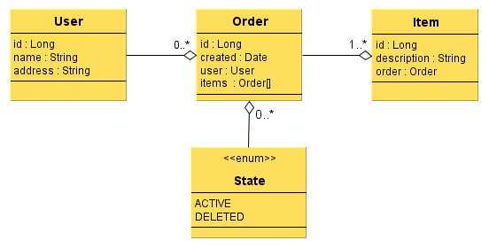
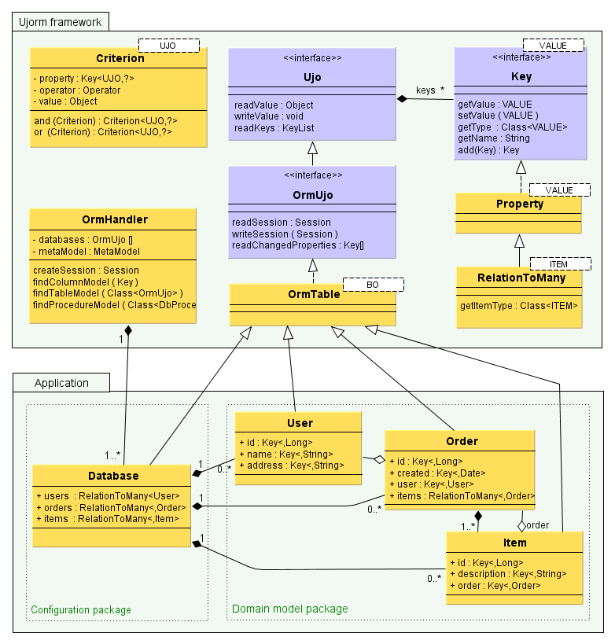
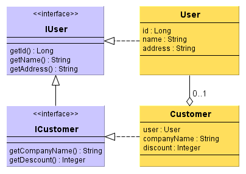

Document License: Creative Commons BY-ND ,
Author: Pavel Ponec, ponec@ujorm.com
Version: Ujorm 1.33 (May, 2013)
PDF format:  http://ujorm.org/orm/tutorial/UjormUserGuide-1.33.pdf
http://ujorm.org/orm/tutorial/UjormUserGuide-1.33.pdf
Thank you for your comments or suggestions.
Example of the application code
Why Key constants have lowercase letters?
Integrating with Spring Framework
Ujorm is an easy-to-use ORM framework designed for rapid Java development based on a relation database and a special key-value objects. The framework is carefully designed for the effective development with great performance and a small footprint. The key features are:
The main vision is:
There is recommended to read first of all this class tutorial based on an annotated source code for a quick introduction. In the tutorial you can found entities from following class diagram:

Note: Keys are in diagrams formally described using the attributes of entity.
Because the Ujorm connected from Maven repository (repo1) is compiled without debugging information, I suggest to you to join the Ujorm JavaDoc to your project, so that you get full names of method parameters and more useful information from API.
When you use the Maven POM file, take the following dependency:
<dependency> <groupId>org.ujorm</groupId> <artifactId>ujo-orm</artifactId> <version>1.33</version> </dependency> |
Where the text 1.33 replace for the current release.
The next class diagram clarifies relation between Ujorm framework classes and application domain classes. The diagram is simplified and slightly modified to show only the relevant entities. A more detailed descriptions can be found, if necessary, in the Ujorm JavaDoc .

Notes to graph:
Key attributes described in the domain objects are always immutable static constants, which provide methods for writing and reading values to (from) the Ujo object. Only this diagram is hinted for better illustration the implementation of Keys in domain objects, in other diagrams of this document is used the same formal registration as for a regular POJO attributes.
Entity Description:
The following code example obtains instances of OrmHandler class and its configuration using the Database class, the instance is retained for. It creates an instance of Order class Items and stores in a database. The save() and commit() operations can throw an run-time exception so there is necessary to catch the exception and close the used Session.
OrmHandler handler = new OrmHandler(); handler.loadDatabase(Database.class); Order order = new Order(); order.setDate(new Date()); order.setDescr("My order"); Item item1 = new Item(); item1.setOrder(order); item1.setDescr("Yellow table"); Item item2 = new Item(); item2.setOrder(order); item2.setDescr("Green window"); Session session = handler.createSession(); session.save(order); session.save(item1); session.save(item2); session.commit(); session.close(); |
The second example contains usage a query using the Criterion joined by two elementary conditions. Missing operator is replaced by the EQUALS' one. Notice how is created composite 'Key'. The composite 'key' can be stored as an additional static constants of domain object. Prepared query is contained in the 'Query' object a can be simply used in 'for-each' command. In the end we have to close database 'session' again. More information about the Criterion use can be found later in this document.
Criterion<Item> cn1, cn2, criterion; cn1 = Item.id.whereGe(1L); cn2 = Item.order.add(Order.descr).whereEq("My order"); criterion = cn1.and(cn2); Session session = handler.createSession(); for (Item item : session.createQuery(criterion)) { String descr = item.getDescr(); Date created = item.getOrder().getDate(); System.out.println( created + " : " + descr ); } session.close(); |
This Java code executes a database SQL statement similar to this:
SELECT * FROM item LEFT INNER JOIN order ON order.id = item.fk_order WHERE item.id >= 1 AND order.descr = 'John\'s order' ORDER BY order.created, item.id DESC |
where both parameters are passed by a 'question mark' notation for a high security.
In the last example is used information from meta-model, which may contain useful information such as validation of the object.
MetaColumn col = (MetaColumn) handler.findColumnModel(Order.DESCR);
String msg = "DB name: " + col.getFullName() + '\n' + "Comment: " + col.getComment() + '\n' + "Length : " + col.getMaxLength() + '\n' + "NotNull: " + col.isMandatory() + '\n' + "Primary: " + col.isPrimaryKey() + '\n' + "Dialect: " + col.getDialectName() ; System.out.println(msg); |
Prints the text report on a console output:
DB name: db1.ord_order.DESCR Comment: Description of the Order Length : 128 NotNull: true Primary: false Dialect: H2Dialect |
Ujorm framework can use to persistence any object which implements the OrmUjo interface.
However the easiest way is to create a child from the abstract class OrmTable:
public class Order extends OrmTable<Order> { @Column(pk = true) public static final Key<Order, Long> id = newKey(); public static final Key<Order, Date> created = newKey(); public static final Key<Order, User> user = newKey(); /** Reference to an Order Item Iterator */ public static final RelationToMany<Order, Item> items = newRelation(); } |
The primary key is marked by parameter pk of the annotation Column, a database column name is derived from Key field name by default. That is all, isn't it easy?
OK, for better comfort for developers we can optionally add getters and setters, however it is important to know that the framework doesn't need the methods:
public class Order extends OrmTable<Order> { [ The Key declarations ... ] public Long getId() { return get(id); } public void setId(Long _id) { set(id, _id); } public Date getCreated() { return get(created); } public void setCreated(Date _created) { set(created, _created); } public User getUser() { return get(user); } public void setUser(User _user) { set(user, _user); } /** Only getter is allowed for the UjoIterlator */ public UjoIterator<Item> getItems() { return get(items); } } |
Note, that the relation to the Items can't have got the setter. A new Items can be assigned by the method Session.save(...) to database only.
Since Ujorm release 1.10 is allowed to describe persistent objects or its properties by special annotation called Comment.
In case that a DDL auto-update is enabled than Ujorm write the text to relation database meta-model loading time, if the feature is supported
The assigned policy can be affected by parameter COMMENT_POLICY with options:
Sample of the use:
@Comment("Order table is a head for its 'item' list) public class Order extends OrmTable<Order> { @Comment("The Primary Key") @Column(pk = true) public static final Key<Order, Long> id = newKey(); @Comment("Date of insert") public static final Key<Order, Date> created = newKey(); @Comment("Key to related user") public static final Key<Order, User> user = newKey(); } |
The Criterion is a base element to restrict a database query, however criterions have got one next feature: they can be used immediately for the evaluation of an object - as a validator.
Each Criterion can be built to the binary tree by to operators: and(), or().
For example let's create an instance of the Order entity:
final Order order = new Order(); order.setId(100L); order.setDescr("my order"); order.setDate(new Date()); |
and three different instances of the Criterion class:
final Criterion<Order> crnId, crnDescr, crnCreated, crn; // Order.id>99 : crnId = Order.id.whereGt(99L); // Order.descr='another' : crnDescr = Order.descr.whereEq("another"); // Order.created<=now() : crnCreated = Criterion.where(Order.created , Operator.LE, new Date()); |
See the samples where the assert statement have got a true result always.
Simple condition:
Order.id>99
assert crnId.evaluate(order); |
Compound condition:
Order.id>99 or Order.descr='another'
crn = crnId.or(crnDescr); assert crn.evaluate(order); |
Compound condition with parentheses:
Order.created<=now() and (Order.descr='another' or Order.id>99)
crn = crnCreated.and(crnDescr.or(crnId)); assert crn.evaluate(order); |
Another condition:
Order.created<=now() or Order.descr='another') and Order.id>99
crn = (crnCreated.or(crnDescr)).and(crnId); // ... or simple by a native priority: crn = crnCreated.or(crnDescr).and(crnId); assert crn.evaluate(order); |
See the last example to filter an list of order items where each its order is created in the past:
List<Item> items = Item.order.add(created).whereLt(new Date()) .evaluate(getAllOrderItems()); for (Item item : items) { System.out.println(item); } |
Further examples of solved tasks can be found at this link .
Native Criterion is a special Criterion with a native SQL code. The Criterion can be created by the factory method
Criterion.forSql(Property, SQL_condition)
where
The instance of the native Criterion have got some special features:
The native Criterion can be joined with another Criterions include the native type. The Criterion can be used also in the Native Query.
Sample of the use:
Criterion<Order> crn1 = Criterion.forSql (Order.id, "ord_order_alias.id > 3"); Criterion<Order> crn2 = Order.created..whereLe(new Date()); Query<Order> orders = session.createQuery(crn1.and(crn2)); for (Order order : orders) { System.out.println("ORDER: " + order); } |
Note: the property id from the sample can be replaced for another Key from the Order class.
The native Query is a tool of the framework Ujorm to mapping a native (database-dependent) SQL query to OrmUjo business object. Each native Query must be mapped to new object. Using of the Query is similar like the object-table mapping, however the @View annotation is used instead of @Table.
@View(select="SELECT ord_order_alias.id, count(*) AS item_count" + " FROM {SCHEMA}.ord_order ord_order_alias" + ", {SCHEMA}.ord_item ord_item_alias" + " WHERE ord_order_alias.id = ord_item_alias.fk_order" + " GROUP BY ord_order_alias.id" + " ORDER BY ord_order_alias.id") public class ViewOrder extends OrmTable<ViewOrder> { /** Unique key */ @Column(pk=true) public static final Key<ViewOrder,Long> ID = newKey(); /** Item Count */ public static final Key<ViewOrder,Integer> ITEM_COUNT = newKey(0); } |
The View:
Sometimes there is necessary to use a SQK query built in the run-time. For the case use you can use the next feature:
final Long excludedId = -7L; SqlParameters sql = new SqlParameters().setSqlStatement ( "SELECT * FROM (" + "SELECT ord_order_alias.id" + ", 1000 + count(*) AS item_count" + " FROM ${SCHEMA}.ord_order ord_order_alias" + " LEFT JOIN ${SCHEMA}.ord_item ord_item_alias" + " ON ord_order_alias.id = ord_item_alias.fk_order" + " WHERE ord_item_alias.id != ?" // Parameter is replaced by the excludedId + " GROUP BY ord_order_alias.id" + " ORDER BY ord_order_alias.id" + ") testView WHERE true" ).setParameters(excludedId); Criterion<ViewOrder> crit = ViewOrder.itemCount.whereLe(100); long orderCount = session.createQuery(crit) .setSqlParameters(sql) .getCount() ; Query<ViewOrder> orders = session.createQuery(crit) .setLimit(5) .orderBy(ViewOrder.ID) .setSqlParameters(sql) ; |
Persistent class is obtained by extending the abstract class OrmTable or implementation of OrmUjo interface. Persistent object doesn't contain invasive states known from specifications of 'JPA/Hibernate', but each persistent object of OrmUjo type contains two other attributes:
Function of OrmUjo object is just "data transporter", without any restrictions you can do activities such as:
Note: both of these attributes aren't transferred by Java serialization, which means that after the restoration from serialization, they will be logically empty.
Mapping of data types means adding JDBC type and element name to persistent Ujo property. Depending on the parameter mapping can be divided into two major groups:
More detailed description is here:
Mapping of values
Mapping of session M:1
ordProperty = RelationToOne.newInstance (Order.class, Order.sid)
I recommend referenced column mark with a unique index for fast searching and data integrity, some databases require an index explicitly.
Mapping of session 1:M
This type of mapping offers (in way of writing code), easy access to the database query results. Any other value invoking generates a new database query. This type of property doesn't affect the creation or modification of database structure. Example of use:
items = newRelation (Item.class)
Mapping of session 1:1
From the perspective of a solution this is a special case of session M: 1, where degree number M can be limited by appropriate unique index. An alternative solution can be using a relational table as primary key (see example below).
Mapping of relation M:N
The binding is implemented using two relations M:1 & 1:N, which are mapped on the other (relation) table.
The fetching strategies are a way how to fetch related entities or attributes from related database tables. There are available three basic solutions in the Ujorm framework:
See the next chapters for more information
The lazy loading is implemented in the Ujo-key instance for each attribute that contains other entity, which is, in the database model, mapped by a foreign key.
In this case the Ujorm starts new database query that uses a database connection stored in opened session. However, because the entity can't open the closed session is itself, so LazyLoading on closed session shows a run-time exception:
new IllegalStateException ("The session is closed")
Such exeption can be avoided by choosing a suitable solution:
OrmUjo.writeSession(session)
Session.reload (ujo)
item.getOrder();
OrmTools.loadLazyValuesAsBatch(...)
OrmTable.readFK (property)
Note: Ujorm core doesn't use this method and isn't included in OrmUjo interface. The method is available in the default implementation of OrmTable.
Sometimes you need to get lazy attribute(s) with a single SQL query using JOIN for more database query optimization, or to use some specific operators in your database. In this case, you can use:
Two or more related entities can be loaded by the the same SQL SELECT for more related database tables. For this case assign one or more required ujo-keys to the Query using the method setColumns(...) where composite keys are allowed. See the next example:
Query<Item> query = session.createQuery(criterion); // Load the NOTE attribute only to the Item entity: query.setColumn(Item.NOTE).list(); // Load the column ORDER.CREATED only: query.setColumn(Item.ORDER.add(Order.CREATED)).list() ; // Load all columns of the Order entity: query.setColumn(Item.ORDER).list() |
The list or result will be the parially or fully loaded OrmUjo objects, where each related object will have got a new instence allways.
The batch loading is a special case of the lazy loading where related entities can be loaded using the one SQL request with the IN phrase on demand. See the JavaDoc of the static method:
OrmTools.loadLazyValuesAsBatch(...)
Ujorm uses caching objects in session in order to limit duplicate database queries. Cache behavior has a simple rule:
From cache side: Ujorm doesn't have exclusive access to the database, the registration will only need to align the allocation of primary keys. With parameter CACHE_POLICY you can disable the cache for whole meta-model or you can disable releasing the cache with the garbage collector.
To optimize performance rather recommend to keep the cache of logic units at the level of application logic (e.g., Articles) than maintaining a cache of database rows.
Ujorm can create or update the database schema using DDL commands according its meta-model. Meta-model contains a description of the real database structure, which is built from class names, Key names, their annotations and occasionally from a XML configuration file. Once the meta-model loading (into a memory) is finished, the information is locked so any future modifications aren't possible. Updating the database is following these rules:
Parameter ORM2DLL_POLICY can change behavior of update to one of the following approaches:
General use of Ujorm parameters is described in the tutorial.
Ujorm doesn't support the concept of inheritance in the JPA. The main reason is that implementation of inheritance into the existing Ujorm architecture simply doesn't fit.
Easy availability of inheritance in ORM tempting to light-headed use, which can cause performance problems on production data, so I recommend rather avoid the inheritance. However, if required, Ujorm allows to emulate inheritance - using design pattern of aggregation and interface (interface).
In draft of solution the inheritance are used entities:
The proposed solution is based on IUser interface, that implements User and Customer objects. Both entities, User and Customer, shares the same ID. We can start using the advantages of inheritance, because instance of type ICustomer can be written to the data type IUser. Descriptions of setters have been skipped to simplify the diagram.

Notice that the 'Customer' has a primary key of User type and shares the same ID value:
public class Customer extends OrmTable<Employee> implements IUser { @Column(pk=true, value="id") public static final Key<Customer, User> user = newKey(); ... } |
Implementation of the method Customer.getLogin() might look like this:
@Override public String getLogin() { return get(user).getLogin(); } |
In operations such as INSERT and UPDATE, we have to take care of each entity separately. See the example of coding to save the 'Customer':
Session session = handler.getSession(); session.save(customer); // Save the parent User object too session.commit(); ... session.update(customer); // Update the parent User too session.commit(); ... session.delete(customer); // Delete the parent User too session.commit(); |
Example of a full implementing the inheritance of the 'Customer' class can be found here and its use here. For more information see the parametr INHERITANCE_MODE.
Ujorm supports automatic generation of primary key using UjoSequencer class. The solution was influenced primarily by requirements for high reliability and smooth portability of implementation between database of different providers. Allocation of primary keys is following these rules:
This behavior can be eliminated by disabling the cache using value 1. Value of cache can be modified correctly also in application program (SQL command).
How does the default class UjoSequence? Sequence numbers are taken from the database table column ujorm_pk_support.seq. Ujorm have also booked a series of numbers in advance, not to have ID for each reaching back to the DB, the buffer size is governed by the cache column. The seq column is always the last number of the allocated range. Column maxvalue can limit the maximum number of assigned sequence, in case the next number overcomes the limit so the class UjoSequencer throws exception. If maxvalue have got zero, so the limit is not checked.
A common question is how to use native support of database sequence? The solution lies in creating own implementation (child) of UjoSequencer class. Class of this child must be registered in the parameters Ujorm before creating a meta-model. The only requirement of solution is that the acquisition of a new primary key (e.g. using JDBC) must be completed before INSERT command. Removing this condition is in the development plan of Ujorm.
There is possible to suppress the formation table 'ujorm_pk_support' by the overriding the method UjoSequencer.isSequenceTableRequired() in case a different implementation of the ID generator is used.
Ujorm supports since version 0.94 invoking database stored procedures and functions (furthermore just a procedure). Each procedure is described by class extending an abstract DbProcedure class, which implements the Ujo. Important is an order of Keys in the class, which must match the order of parameters in the procedure. If the procedure have no return type, the first constant Key in order will be Void.class type. The first Key is OUTPUT type, others are INPUT type. The default type of properties you can override by annotation @Parameter (input = true, output = true). Database procedures need to be registered in the class of databases like the database table:
public static final Property <Database,MyProcedure> procedure = newInstance(); |
We create an instance of the procedure, fill the INPUT type parameters and invoke with 'call' method with parameter of opened session:
MyProcedure procedure = new MyProcedure(). procedure.set (MyProcedure.DATE, new Date ()); String result = procedure.call (session); |
Complete example you can find in tutorial. Instances of the procedure isn't connected with a particular session and such instance can be used can frequently with different parameters (only one-thread access). Ujorm version 1.00 does not support the return type of parameter ResultSet.
How to configure a database connection for Ujorm? You can use parameters for the direct database configuration or use some JNDI service (from an application server for example). If the JNDI parameter have got no empty text then other direct database parameters will be ignored. The JNDI solution is preffered in a production environment.
There are three basic ways how to configure the database connection:
Where:
For a better performance is useful to use so called 'batch operation'. The common feature is that many rows is affected by a single SQL statement. There are supported next cases of the typical use.
Most of databases supports special SQL statement for Multi Row Insert. The statement can import many database rows by a single SQL statement. If database doesn't supports the feature, so all rows will be inserted by many plain SQL INSERT statements. See next sample of use:
List<Item> itemList = createOrderItems(); session.save(itemList); session.commit(); |
Warning: the batch insert affect to parent objects (if any) using a plain INSERT statement only.
Ujorm can modify a table column(s) to any CONSTANT by single SQL statement. The example updates one database column (created) to the current date for all Orders where id>=1 .
Order order = new Order(); // Activate the Change column management: order.writeSession(session); // Set a value(s) to the change: order.setCreated(new Date()); Criterion<Order> criterion = Criterion.where(Order.id, GE, 1L); session.update(order, criterion); session.commit(); |
Warning: batch update does affect to parent objects (if any). Modification to an expression is not supported in the current version of Ujorm.
The next example deletes all Items where Item.id < 10. See more information in JavaDoc.
Criterion<Item> crit = Criterion.where(Item.id, LT, 10L); int count = session.delete(crit); session.commit(); System.out.println("There are DELETED rows: " + count); |
Warning: batch delete does affect to parent objects (if any).
All database DML statements can be seen as temporary until they are committed. Ujorm supports commitment with the Ujorm Session.commit() . Method Session.rollback() is used to remove operations performed since the previous commit or rollback. Use this method when an exception occurs or when the program detects some error condition or error in the data.
For a parallel transaction use a next session.
See a JDBC 2.0 documentation for more information.
Nested transactions are supported since the Ujorm 1.23 running on JDBC driver 3.0. You can use two ways to manage transactions:
Session session = getDefaultSession(); try { session.beginTransaction(); session.save(newObject()), // some CRUD operations doInnerTrasaction(...); session.commitTransaction(); catch {Exception e) { session.rollbackTransaction(); } |
The Ujorm have got partially implemented the JTA, so you can use the next code for the same behaviour too:
Session session = getDefaultSession(); Transaction transaction = null; try { transaction = session.beginTransaction(); session.save(newObject()); // some CRUD operations doInnerTrasaction(...); transaction.commit(); catch {Exception e) { transaction.rollback(); } |
Note: the method Session.commit() make a commit for all (nested) transactions similarly like the method Session.rollback() make the rollback for all transactions.
The Ujorm have got a native support for the both logging tools
On the first request to log a message from the Ujorm framework is processed:
Of course, you can use any other logging systems based on the interface org.slf4j.Logger as the LogBack for example. There is need to customize your project along the logging framework’s documentation.
The OrmTable UJO class is not ready to use in multi-thread environment by default implementation. You can eliminate some risks probably using a read-only mode and loading all needed lazy properties before you share the object to more threads. However for the case is prepared a specilal implementation called OrmTableSynchronized with the next features:
The data lazy loading in a new thread needs to assign a new (open) Session instance always. The great news are that an incorrect lazy property loading throws the IllegalStateException instead of a dead-lock risk.
In development, after time we can meet the requirement of implementation of specific function or features of SQL language. For this type of requirement can be created "own child" of SqlDialect class (or some of its implementation), because this class provides several important activities:
Any of the attributes above can be easily modified by creating a 'child', new class is registered by annotation in the Database class type. Overlapping the SqlDialect class can solve one of the following requirements:
TypeService
class provides a mapping of application values to the JDBC API. Methods of class can be overridden with your own implementations. Registration is done by annotation in the 'Database' type class.
UjoSequencer
As stated earlier, this class allows the implementation of your own algorithm for assigning a unique ID to INSERT command. Registration is done by annotation in the 'Database' type class.
Meta-model is created according to the content of Ujo properties of Database class and its tables. The names of tables, view and procedure are derived from names of Ujo property. Most features of the model can be overridden by annotations placed directly in property or in name of the class. Features set by annotation can be also overridden by configuration XML file, which can optionally modify only selection of a meta-model.
After creating a meta-model in memory, the model is locked and you can't write into meta-model anymore, at run-time, however, you can obtain useful information from it. Slightly simplified class diagram meta is in the following picture:

Entity Description:
Ujorm is very fast in comparison to its competitors, see the benchmark table to detail information. I hope that you will not be angry if I compare Ujorm performance with the popular Hibernate ORM framework. The result of the benchmark is listed in the next table. Each action represents a type of database operation with no optimization, all tests are performed by default Java parameters.
Action on PostgreSQL | Ujorm 1.00 [sec] | Hibernate 3.3.1 [sec] | Ratio |
meta data | 0.33 | 1.53 | 4.65 |
single select | 0.35 | 0.58 | 1.67 |
multi select | 21.78 | 168.01 | 7.71 |
empty select | 1.24 | 151.17 | 121.85 |
insert | 11.12 | 12.30 | 1.11 |
delete | 101.18 | 208.28 | 2.06 |
update | 8.04 | 3.90 | 0.49 |
Action description:
Environment description:
The similar test I have finished on the database H2 (release 1.2.147) running in-memory mode. The test was performed on 2011-01-29 on the release Ujorm 1.10:
Action on H2 in-memory | Ujorm 1.10 [sec] | Hibernate 3.3.1 [sec] | Ratio |
meta data | 0.42 | 1.26 | 3.0 |
single select | 0.19 | 0.53 | 2.9 |
multi select | 0.69 | 155.28 | 225.9 |
empty select | 0.36 | 155.37 | 432.1 |
insert | 1.62 | 2.43 | 1.5 |
delete | 0.37 | 151.43 | 407.3 |
update | 1.28 | 1.13 | 0.9 |
Note:
The Hibernate framework provides many parameters for optimization, however some of them can bring some limitations. For example a Hibernate transaction can be set to read-only in the case of the exclusive SELECT(s) to better performance. The Ujorm have got a great performance on default settings so it will save a lot of development time.
Ujorm framework offers prepared dialects for the following databases:
As mentioned in the previous chapter, support for other databases can be implemented by overwriting the SqlDialect class or one of its 'child'. The new class has to be registered in application class of the 'Database' type.
In the examples mentioned in this document are the names of the static field of Keys often written in lower case - contrary to normal convention. The reason is to shorten the code when creating Key, but also seems to be useful when small letters more correspond to instance variables (fields). Lowercase letters are proven to be better, but the using the capital letters in your project won't create a technical problem.
Full specification of Key can be set explicitly, including a name, by this pattern:
public static final Property <BO, Long> id = newKey('id'); |
In short writing is name of 'Property' taken from a name of field:
public static final Property <BO, Long> id = newKey(); |
Terms used in Ujorm:
This chapter describes the important features of the UJO object, which have an effect on the correct behavior:
or other methods that invoke them internally, for example:
or more comfortable getters and setters, that invoke (internally) one of the methods above
However, these two methods are suitable for the overriding in propose to implement the various conversions, validations and other requirements.
The Spring Framework can manage database transactions using a special module called 'orm-spring'. In a Maven project use the next dependency in your POM file:
<dependency> <groupId>org.ujorm</groupId> <artifactId>ujo-spring</artifactId> <version>1.33</version> </dependency> |
Where the text 1.33 replace for the current release.
Configure the Spring application context by the next example:
<?xml version="1.0" encoding="UTF-8"?> <beans xmlns="http://www.springframework.org/schema/beans" xmlns:xsi="http://www.w3.org/2001/XMLSchema-instance" xmlns:tx="http://www.springframework.org/schema/tx" xmlns:context="http://www.springframework.org/schema/context" xsi:schemaLocation="http://www.springframework.org/schema/beans http://www.springframework.org/schema/beans/spring-beans-2.5.xsd http://www.springframework.org/schema/tx http://www.springframework.org/schema/tx/spring-tx-2.5.xsd http://www.springframework.org/schema/context http://www.springframework.org/schema/context/spring-context-2.5.xsd">
<!-- Annotation-based configuration--> <context:annotation-config /> <context:component-scan base-package="org.ujorm.transaction.service.impl" /> <tx:annotation-driven transaction-manager="ujormTransactionManager"/>
<!-- ORM Ujorm config --> <bean name="ormHandlerProvider" class="org.ujorm.transaction.config.OrmHandlerProviderImpl" /> <bean id="ujormTransactionManager" class="org.ujorm.spring.UjormTransactionManager"> <property name="ormHandlerProvider" ref="ormHandlerProvider"/> </bean> </beans> |
The implementation code if the class OrmHandlerProviderImpl is in the next sample:
@Service public final class OrmHandlerProviderImpl implements OrmHandlerProvider{ @Override public OrmHandler getOrmHandler() { final OrmHandler result = new OrmHandler();
// There are prefered default properties for a production environment: final boolean yesIWantToChangeDefaultParameters = true; if (yesIWantToChangeDefaultParameters) { final MetaParams params = new MetaParams(); params.set(MetaParams.SEQUENCE_SCHEMA_SYMBOL, true); params.set(MetaParams.LOG_METAMODEL_INFO, true); result.config(params); } // External Configuration: final boolean yesIWantToLoadExternalConfig = false; if (yesIWantToLoadExternalConfig) { java.net.URL config = getClass().getResource("databaseModel.xml"); result.config(config, true); } result.loadDatabase(DatabaseModel.class); return result; } } |
Original sources are located in jUnit test in the Ujorm project.
See the official Spring documentation for more information.
Thanks to developer team at Effectiva Solutions for their valuable comments on the technical content of this document.